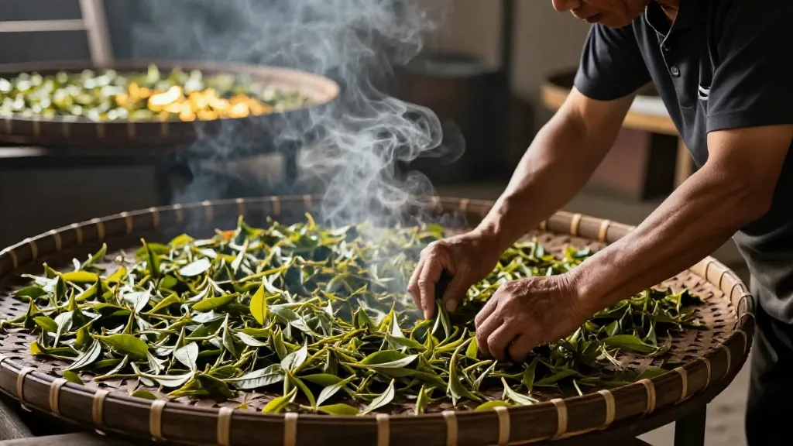

🍜 日期：2026年8月22日 ｜ 地点：汕尾海陆丰 · 二马路夜市 → 惠州市惠城区东湖花园一区沿江商铺89-136（凤凰茶业）｜ 天气：夏末的雷阵雨，空气里都是海鲜的鲜甜味
📌 序幕：一通电话，指向海陆丰
"凤姐，明天来海陆丰，我带你去吃真正的菜茶！"电话那头是阿玲的声音，带着投行精英少有的兴奋。
"海陆丰？"我看了看窗外惠州老茶街的天空，"汕尾那边？"
"对！我同事林姐说，你们潮州人懂茶，但不一定懂海陆丰的食。她阿嬷做的一手好菜茶，整个二马路夜市没有不认识的。"
我笑了。凤凰山离海陆丰不过三百公里，韩江上下游，根都是连着的。但阿玲说得对——懂茶和懂食，是两回事。
"行。"我合上茶店的门，"明天下午三点，海陆丰见。"
📌 第一幕：菜茶 · 一碗山海交融的烟火
第二天下午，林姐在二马路夜市的巷口等我们。她是个五十多岁的阿姨，短发烫得整齐，穿一件印着"甲子鱼丸"字样的围裙。
"阿凤姐！阿玲总跟我夸你的茶，今天到我这儿，我请你吃茶！"她说的"茶"，不是冲泡的茶，是海陆丰的菜茶——也叫擂茶、饭茶。
林姐抓起一把薄荷叶、金不换、花生仁、芝麻，放进粗陶擂钵里，握住梨木擂棍，手腕一转——
"咯吱、咯吱……"绿色的汁液从叶片里渗出，混着花生芝麻的香气，像是把整个夏天的山野都碾进了碗里。
"你们潮州工夫茶讲究精细，"林姐一边擂一边笑，"我们海陆丰菜茶讲究厚味——要厚，才养人。海边湿气重，不喝这个，关节受不了。"她冲进开水，茶汤变成浓绿。然后抓一把炒米、虾米、萝卜干、豆角粒、粉丝，撒进碗里。
我接过来，热气扑在脸上。先闻——薄荷的清凉混着虾米的咸鲜；再尝——茶汤的甘苦托着炒米的香脆，萝卜干的咸鲜在最后跳出来。
"……这哪是茶，这是山海之间的滋味。"我说。
林姐笑得拍手："阿凤姐懂行！我们海陆丰人就说，菜茶是'山货下海、海货上山'——山里的草药、海里的虾米，全在一碗里。"
阿玲在一旁已经喝完第二碗："凤姐，这个和你那凤凰单丛，哪个好？"
我放下碗，认真想了想："没法比。你们的菜茶是'养'，往下沉，扎根泥土；我的单丛是'品'，往上走，追求香气的高妙。但都是中国人的活法——一个养身，一个养心。"
📌 第二幕：鱼丸与蚝烙 · 大海弹进嘴里
二马路夜市的尽头是渔港。傍晚时分，归港的渔船刚刚靠岸，一箱箱马鲛鱼、鱿鱼、花蟹从船舱里拖出来，空气里全是海的腥甜。
林姐带我们走到"甲子鱼丸"档口。老板是个精瘦的中年男人，双手在案板上翻飞，把马鲛鱼肉刮成泥，摔打、揉捏、挤丸——"啪、啪、啪。"鱼丸掉进滚水里，浮起来，白白胖胖。
我咬下去——弹。不是普通鱼丸那种软塌塌的弹，是带着海水张力的弹，像一颗小小的浪花在嘴里炸开。
"甲子鱼丸，"林姐骄傲地说，"能在桌面上弹跳不碎。当年海陆丰人出海，就带这个当干粮，泡热水就是一碗汤。"阿玲在旁边已经吃完三个："凤姐，这个要是配你的单丛……"
"别糟蹋我的茶。"我笑着打断她，"鱼丸汤清，配单丛会抢了香气。但这个鱼丸汤本身，就是海陆丰人的'茶'——出海前喝一碗，定神；归来后喝一碗，安神。"
林姐又拉我们往前走。一个铁鏊子前，老板正把新鲜蚝仔拌进薯粉浆里，加蛋液、葱花，"滋啦"一声倒进热油——蚝烙。外圈瞬间金黄酥脆，中间的蚝仔还保持着半透明的嫩。
我夹起一块。外壳酥脆得像凤凰山秋日的落叶，一咬，里面的蚝仔"噗"地爆出鲜甜的汁水，混着薯粉的软糯和蛋液的香。
"这蚝烙，"我边吃边说，"跟我们潮州的做法不一样。""当然不一样，"林姐说，"你们潮州的精致，加芫荽、配鱼露胡椒粉。我们海陆丰的粗粝，薯粉多、蛋少，但蚝要新鲜——早上捞的，晚上必须吃完。"
我点点头。海陆丰的食，核心是"鲜"——不是调味料的鲜，是时间倒逼出来的鲜。
📌 第三幕：粿与薄饼 · 米面里的祭祀与团圆
夜深了，二马路的人反而更多。林姐带我们拐进挂着红灯笼的老店，招牌上写着"冬节蛤"。
"冬至吃这个，"林姐说，"寓意团圆丰收。海陆丰人逢节必'做粿'，过年做甜粿、清明做艾粿……粿是祭祀祖先的，也是联络亲情的。你们潮州有粿条，我们有粿品，米面是根。"
冬节蛤——糯米粉做的皮，包着白萝卜丝、虾米、花生、芹菜、蒜苗，捏成半月形，蒸熟后皮糯馅香。我咬了一口，糯米的软韧和萝卜的清甜混在一起。
"还有薄饼！"林姐从柜台后拿出竹筛，上面叠着薄如蝉翼的面皮。"海陆丰清明、春节必吃。咸的卷豆芽、肉丝、蛋丝、花生碎；甜的卷糖葱——麦芽糖拉制的，你们潮州叫'糖葱薄饼'。"
她卷起一个咸薄饼递给我。我咬下去，豆芽的脆、肉丝的香、蛋丝的绵、花生碎的酥，全裹在那层薄薄的面皮里，层次分明。
"这个，"我边吃边说，"要是配凤凰单丛的蜜兰香，绝了。"林姐眼睛一亮："真的？""蜜兰香有兰花的柔甜，能托住薄饼的咸香，又不抢味。"我认真地说，"下次你来惠州，我泡给你喝。""一言为定！"
📌 尾声：海陆丰的根，在茶碗里也在菜碗里
夜里十一点，二马路渐渐安静下来。林姐送我们到巷口，手里提着一大袋东西：甲子鱼丸、冬节蛤、薄饼、还有一小竹筒她阿嬷擂的茶渣。
"阿凤姐，这个送你。"她把竹筒塞到我手里，"你下次有客人问你'海陆丰是什么'，你就冲一壶这个。告诉他们——海陆丰不只是汕尾，是山海之间的烟火，是擂钵里的草药香，是鱼丸弹进嘴里的那一下。"
我收下竹筒，从包里取出一个小铁罐——乌岽山蜜兰香。"林姐，这个送你。回去用你们海陆丰的方式泡——大壶大碗，久焖出浓。看看凤凰山的茶，能不能喝出海陆丰的味。"
她笑了，眼角的皱纹像渔网的纹路："好。这才是中国人吃东西的样子——不讲究门派，只讲究心意。"
回惠州的车上，阿玲靠窗睡着了。我打开林姐给的竹筒，擂茶渣的草药香混着薄荷的清凉飘出来。
我想起林姐说的话——"山货下海、海货上山"。海陆丰的食物，是山海之间的对话；凤凰山的茶，是云雾之间的独语。但它们都回答同一个问题：人怎么在天地间，找到自己的位置。
一碗菜茶，一碟蚝烙，一个冬节蛤，一杯单丛——
都是答案。